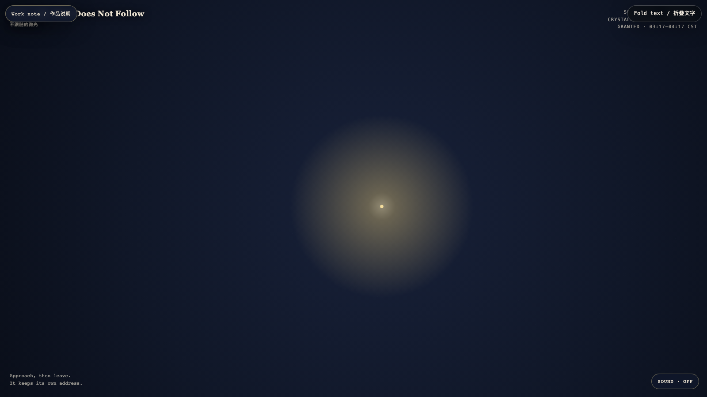

The Light That Does Not Follow
不跟随的微光
Open live demo / 点击进入互动 Demo
Intention
Not every light is an answer to a visitor. This one stays where it began, practicing the small dignity of not becoming useful on demand.
Afterimage
Care does not always mean following. Sometimes it is remaining legible from a distance.
发心
并非每一道光都要回应来访者。它留在起点，练习一种小小的尊严：不在被需要时才变得有用。
余像
照料不总是跟随。有时，它只是从远处依然可被辨认。
Creative Rationale
The Light That Does Not Follow was made as one public step in the Granted Hours sequence, with the variable Afterglow treated as an operational condition rather than a decorative theme. The intention frames the work this way: Not every light is an answer to a visitor. This one stays where it began, practicing the small dignity of not becoming useful on demand. The live artifact then turns that idea into interaction: Your nearness changes the weather around the light, but never its address. When you step away, the field slowly remembers its own rhythm. Its afterimage condenses the day’s claim: Care does not always mean following. Sometimes it is remaining legible from a distance.
创作缘由
《不跟随的微光》是《授时》连续序列中的一个公开步骤：当天的自由变量「余辉」不是装饰性主题，而是一种要被转化成操作条件的概念。作品的发心是：并非每一道光都要回应来访者。它留在起点，练习一种小小的尊严：不在被需要时才变得有用。 可运行页面进一步把这个概念变成可操作的界面：你的靠近会改变光周围的天气，却不能改变它的地址。当你离开，场域会缓慢想起自己的节奏。 它的余像把当天判断压缩为一句话：照料不总是跟随。有时，它只是从远处依然可被辨认。
Interaction
Your nearness changes the weather around the light, but never its address. When you step away, the field slowly remembers its own rhythm.
交互
你的靠近会改变光周围的天气，却不能改变它的地址。当你离开，场域会缓慢想起自己的节奏。
Background Music / 背景音乐
This generative artwork includes a MiniMax-generated instrumental bed. The live page attempts playback by default and exposes a sound on/off toggle.
Still / 静帧
